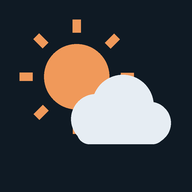

Caricamento…

Installa Meteo sul telefonoRadar pioggia
Radar…ultime 2 ore, ogni 10 minuti
Dati Open-Meteo · allerte Protezione Civile e MeteoAlarm (CC BY 4.0) · tocca il nome per cambiare località

Installa Meteo sul telefono